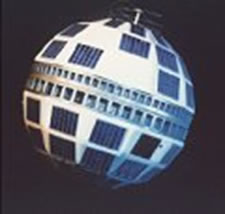
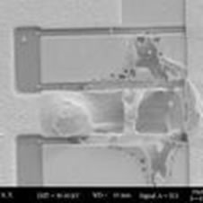
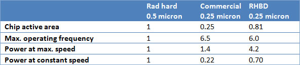
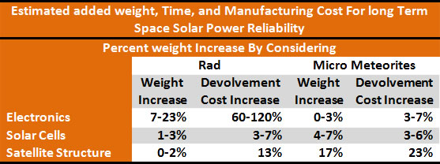

IMPACT ON MISSION RELIABILITY
The Motivation and Future Needs
The harsh space environment can wreak havoc on unprotected electronics. Exposure to energetic
particles can degrade device performance, ultimately leading to component failure over
time. Heavy ions, neutrons, and protons can scatter the atoms in a semiconductor
lattice, introducing noise and error sources.
MooreÅfs Law means that circuit features have become smaller and run on less charge,
making them more vulnerable to disruption by incoming charged particles. It is a very
real issue for the latest densely packed terrestrial microprocessors — chip maker
Intel is investigating the concept of adding an on-chip cosmic ray detector to identify
radiation-based errors — so represents a more serious threat for components operating
beyond the protective umbrellas of Earth's atmosphere and magnetosphere.
These parts that are more rad hard are more expensive than their commercial counterparts
and have lagged several generations behind in terms of processing speed, power, and
size. In addition, many companies that were in the business of supplying rad-hard components
a decade ago have dropped out of the market.
One strategy that has been gaining popularity in recent years is known as Radiation
Hardening by Design (RHBD), this approach relies solely on circuit design techniques
to mitigate the damage, functional upsets, and data loss caused by space radiation.
Figure E14: This graph charts the increasing speed of microprocessors versus year of
introduction for commercial products (the diamond plots) and rad-hard products
(the square plots). Because of the additional effort and cost associated with
developing radiation-hardened processes, the performance of space-qualified
electronics has typically lagged by 5 to 7 years behind their nonhardened
counterparts.
Figure Provided By Aerospace Corporation with permission http://www.aero.org/
Satellites' radiation sensitivity has increased with reduced feature sizes. Not only is
there a concern with heavy ion-related effects but also increasingly with proton
effects. Proton-induced effects are particularly problematic due to their high fluxes
in Earth orbit. Passive electronic components and even straightforward wiring and
cabling can be seriously affected by radiation. The Aerospace Corporation is one of
the few companies left that has been investigating the means by which heavy ions,
protons, and electrons interact with microelectronics. This effort has helped spacecraft
designers find ways to prevent serious anomalies on orbit.

Figure E15: Telstar 1: an early radiation casualty
Figure Provided By Aerospace Corporation with permission http://www.aero.org/
ESA Ali Zadeh of the Components Space Evaluation and Radiation Effects Section said.
Radiation effects of space radiation on satellite hardware are typically imperceptible
visually — although latch-ups cause visible damage, and optical materials and
solar arrays can darken over time ? but still have serious, even mission-ending,
consequences. This radiation can cause unpredictable spacecraft anomalies, and mission
success can depend on how well the onboard electronics resist its effects. Components
specifically designed to tolerate this environment are said to be "radiation hardened,"
or simply "rad hard."

Figure E16:Catastrophic 'latch-up' due to heavy ion
Figure Provided By Aerospace Corporation with permission http://www.aero.org/
Performance Implications
Design-hardened versions of integrated circuits require more space or circuitry than
their unhardened counterparts; therefore, overall performance will not be as good and
price will increase. Depending on the specific circuit function and the level of
hardness required, the area penalty may vary widely. Different mixes of Rad Hardening
By Design (RHBD) techniques can be used to provide elements with a range of hardness
levels.
Figure E17: A six-transistor latch, commonly used as the storage element in a static
memory circuit, is shown alongside a design-hardened 12-transistor variant
(Calin et al.). "B" and "BN" are the bit lines, used to input and output zeros and
ones to the memory cell. "W" represents the word line, used to activate the cell
and read out the stored information. In the conventional cell, a particle strike
directly into node Q may cause the latch to change state, resulting in an error.
In the design-hardened version, Q is represented at two different nodes.
Thus, a strike at any single node cannot cause an upset.
The number of transistors per latch has doubled, which can significantly reduce
the available gate count in a given circuit area.
Figure Provided By Aerospace Corporation with permission http://www.aero.org/
For example, a design-hardened chip using two-, three-, or four-input logic gates with
edgeless transistors and guard bands might be several times bigger than a commercial
version of the chip. The resulting capacitance increase would cause an increase in
power consumption and a reduction in circuit speed, compared with a commercial
design using the same technology.
Reliability
The shrinking of commercial CMOS technologies has proceeded faster than reductions in
supply voltages and the result is higher electric fields increasing the reliability
problems associated with advanced CMOS. Various approaches can help mitigate the
reduced reliability of advanced CMOS technologies. An example, the power-supply
voltages can be lowered to reduce internal electric fields in a given circuit.
The use of Rad Hardening By Design (RHBD) techniques offers even more options.
For example, the length of critical transistor gates can be increased to reduce electric
fields and prolong service life. However, because these longer transistors are slower
than the minimum-size transistors, the increase in reliability comes at the expense of
speed.
Future Issues
The RHBD approach must demonstrate its ability to consistently and reliably supply a
full range of rad-hard parts before it will be accepted as a viable alternative to the
dedicated foundry approach. The Aerospace Corporation is working with the relevant
government agencies to create and maintain a coordinated RHBD infrastructure to
address all the relevant issues and could be a prime supplier of rad hard electronics
to a space solar power generating space satellite.
For example, circuit designers use computer-aided design tools to define and verify
the final circuit layout, to perform logical simulation of the design, to identify
potential failure modes, and to perform static and dynamic timing simulations. These
tools use so-called "cell libraries" to simplify the design process as much as possible.
Each library is a collection of individual circuit elements that includes functional and
performance information about each element. Effective use of RHBD requires that
knowledge of the behavior of the circuits in the space environment be incorporated into
the computer-aided design tools. For instance, the programs would need to simulate the
electrical behavior of the transistor switch in a radiation environment based on the
structure of the device and the physics of the radiation interactions. Since many of
these tools are currently limit they would have to be added to and updated for such a
large scale project.
Funding for libraries with the most stringent requirements—and thus the smallest
markets—must be generated by the customer community, most likely the Department
of Defense (DOD) which could be in cooperation with the project to reduce cost.
Commercial foundries typically provide the starting material for all electronic
components manufactured in their processing facilities; however, nonstandard starting
materials incorporating epitaxial layers or insulating substrates, for example,
may enhance radiation immunity but would also include extra cost compared to the
original commercial products.

Table E1: Relative performance parameters for a hypothetical 100,000-gate logic circuit
(without latches) in unhardened, foundry-hardened, and design-hardened versions is
compared to rad hard by design and other commercial approaches. Using a two-input
logic gate along with edgeless transistors and guard bands, the design-hardened
version (hardened only against total-dose effects) requires 3.2 times more chip area,
runs 8 percent slower, and dissipates 3.2 times as much power at constant speed than
the commercial version. However, when compared with the same circuit from a typical
rad-hard foundry, which is assumed to be two generations behind the commercial process,
the design-hardened version requires 29 percent less area, runs 6 times faster, and
consumes 30 percent less power at constant speed.
Figure Provided By Aerospace Corporation with permission http://www.aero.org/
Government agencies, corporations, and universities around the world are presently
researching and developing RHBD techniques. The Air Force Research Laboratory is
funding several such projects, including some geared toward developing rad-hard
digital and mixed-signal circuits. The Defense Threat Reduction Agency is similarly
funding various RHBD efforts, including programs to develop a radiation-tolerant
static-memory chip using a commercial foundry, a radiation-hardened readout
integrated circuit using both traditional rad-hard foundry processing and RHBD
techniques, and a submicron-level chip incorporating RHBD features. The agency is
also developing an integrated, foundry-independent rad-hard digital design center
and has a program to develop and demonstrate an analog standard cell library.
Sandia National Laboratories also is involved in radiation harden electronics and
has the facilities to test results due to radiation.
DARPA (the Defense Advanced Research Projects Agency) has recently announced a
major program to develop digital, analog, and mixed-signal circuits in highly
advanced commercial technologies using RHBD techniques.
Summary
Radiation hardness by design has quickly evolved from future hope to a business
strategy that may well redefine the way electronic components are procured for
defense space systems and would be important to incorporate the design into the
project. The Aerospace Corporation and others have demonstrated that RHBD
techniques can provide immunity from total-dose and single-event effects in
commercially produced circuits. CAD tools that can model these radiation effects
and cell libraries that use a range of these techniques have been developed at a
number of government agencies, universities, and private companies during the
past several years, culminating in the commercial production of RHBD memories,
microprocessors, and application-specific integrated circuits that are being
specified in DOD and NASA missions. The infrastructure needed to make RHBD a
mainstream procurement approach is gradually being developed and could greatly
be expanded to support the space solar powered mission.

Conclusion
Understanding how space radiation interacts with microelectronics is the first step
in establishing ways to mitigate adverse effects. Research at The Aerospace Corporation
and Government Agencies has been instrumental in revealing the underlying mechanisms
that lead to radiation-induced effects. Semiconductor manufacturing processes continue
to evolve, and new technologies present new opportunities for complex interactions.
Sources
What Could Go Wrong? The Effects of Ionizing Radiation on Space Electronics
John Scarpulla and Allyson Yarbrough
http://www.aero.org/publications/crosslink/summer2003/03.html
ESA Radiation: satellites’ unseen enemy
http://www.esa.int/SPECIALS/Space_Engineering/SEM6W34TBPG_0.html
Designing Integrated Circuits to Withstand Space Radiation
Donald C. Mayer and Ronald C. Lacoe
http://www.aero.org/publications/crosslink/summer2003/06.html

{kind=link}
{kind=link}